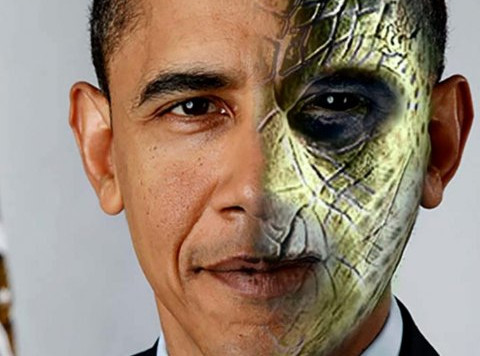
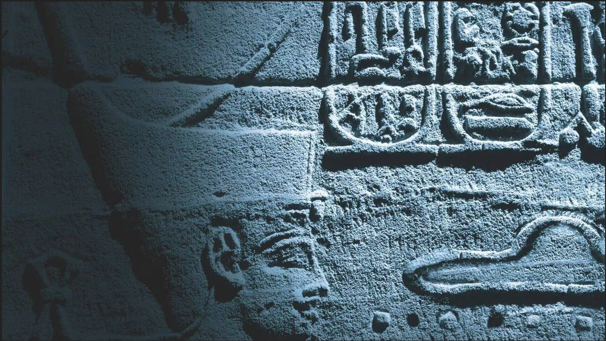
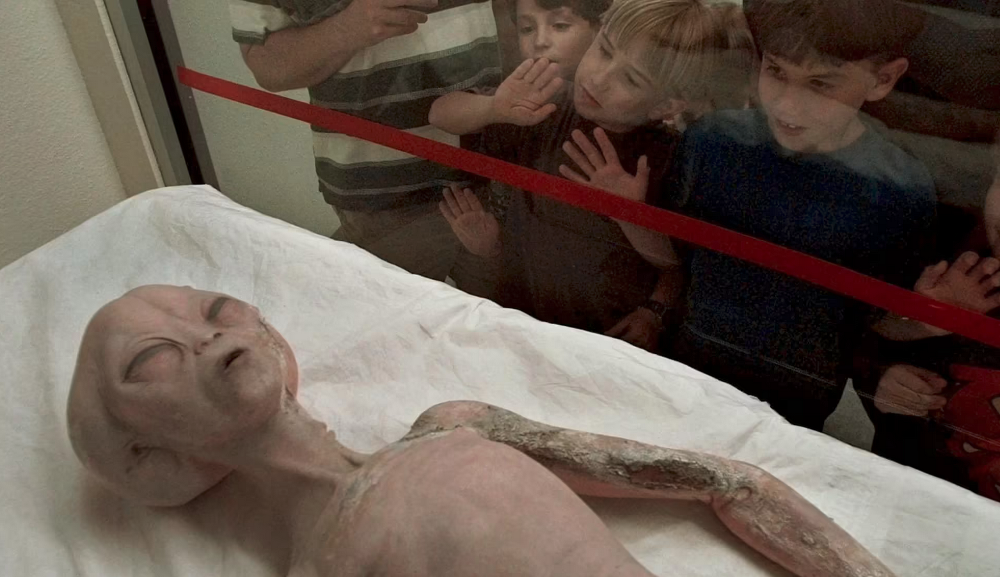

L'Homme a t'il un jour croisé la route d'une forme de vie extraterrestre ?
De nombreuses théories plus farfelues les unes que les autres circulent autour de célébrités qui seraient en réalité des être reptiliens cachés parmi nous, que l'Homme n'aurait jamais posé le pied sur la Lune ou que les lignes de Nazca auraient servi de pistes d'atterissage pour des vaissaux spatiaux...
Cependant certaines d'entre elles sont étroitement liées à l'histoire de l'humanité et plus précisément à des zones d'ombre de notre histoire qui ont généralement précédé une avancée significative de notre civilisation. Ces bonds en avant aux origines indéterminées soulèvent bien des questions et certains mouvements ont le mérite d'essayer d'y apporter une réponse voire de nous faire douter.
La société Aetherius est un mouvement religieux fondé en 1955. Pour ses fidèles les extraterrestres sont des êtres spirituels très évolués appelés Maîtres Cosmiques. Occasionnellement ces extraterrestres prennent forme humaine et nous rendent visite sur Terre, diffusant ainsi des conseils spirituels à travers le monde. Parmi les exemples de maîtres cosmiques, citons Bouddha, Sri Krishna, Confucius et Jésus.
Cette organisation a pour but de guérir le monde par la prière. Toutes les croyances de George King l'homme à l'origine de cette société n’étaient pas fantastiques. Dans une interview à la BBC, King déclare :
« Si vous êtes chrétien, alors vous vivez selon les lois établies par Jésus. Si vous êtes bouddhiste, vous vivez selon les lois établies par Bouddha. Si vous êtes hindou, soyez le meilleur hindou. Cette procédure est le seul véritable moyen pour les hommes de se préserver de leurs bas instincts.. »
Quoi que l'on pense de cette intervention, King n’a pas utilisé son apparition à la BBC pour faire du prosélytisme. Au contraire, il a insisté sur la validité des autres religions et a encouragé les gens à rester sur leur propre chemin spirituel.